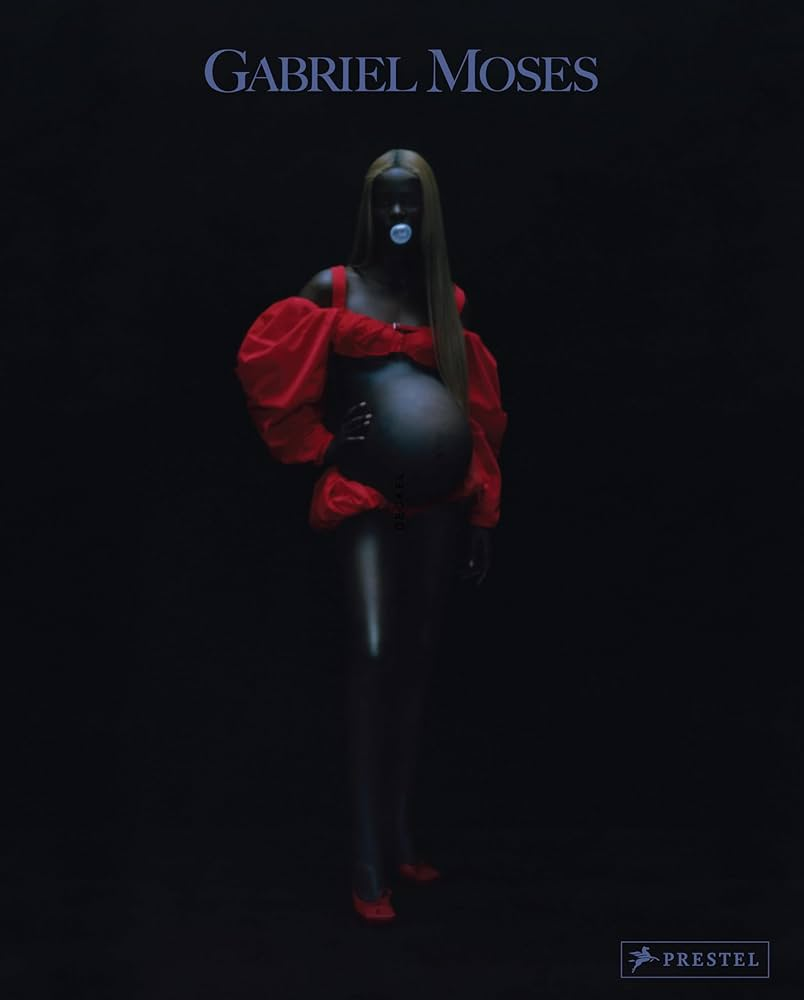
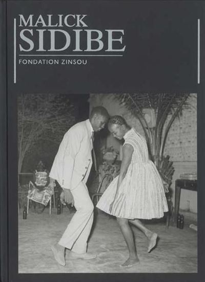
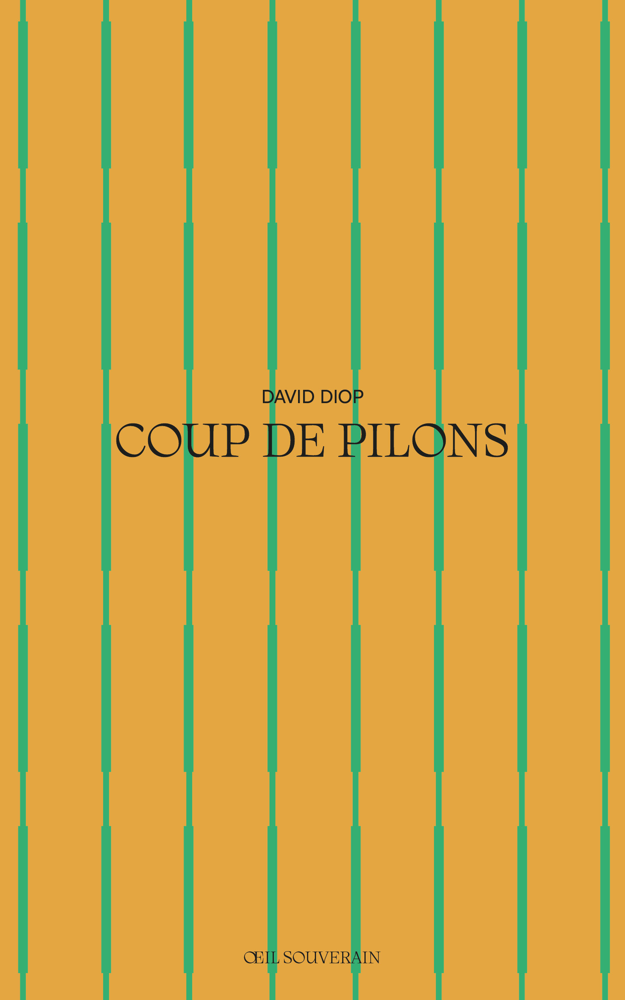

Archive — Saison 01
Répertoire
Une si longue lettreRoman épistolaire
00-01
Cahier d'un retour au pays natalPoésie
00-02
ReginaPhotographie
00-03
AdolescencePhotographie
00-04
L'art nègreEssai
00-05
Malick SidibéPhotographie
00-06
Things Fall ApartRoman
00-07
African Artists: From 1882 to NowDesign
00-08
En attendant le vote des bêtes sauvagesRoman
00-09
Coups de pilonPoésie
00-10